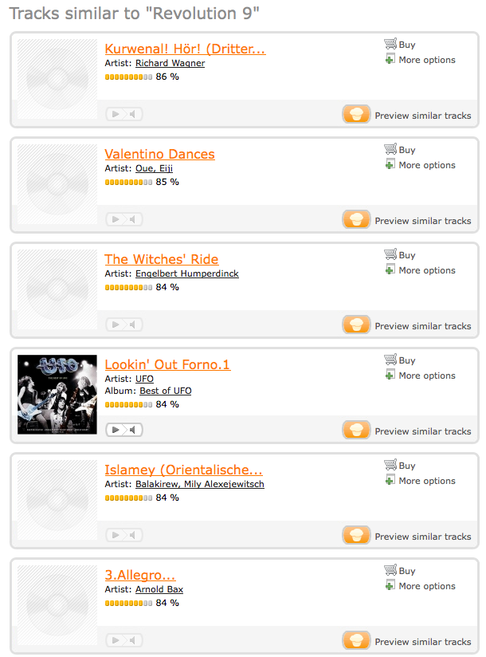
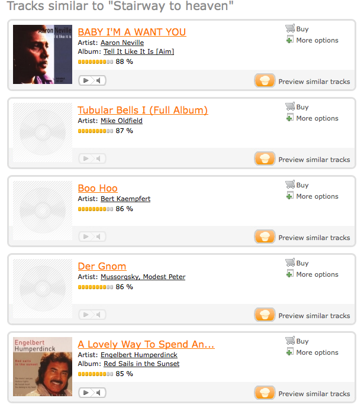
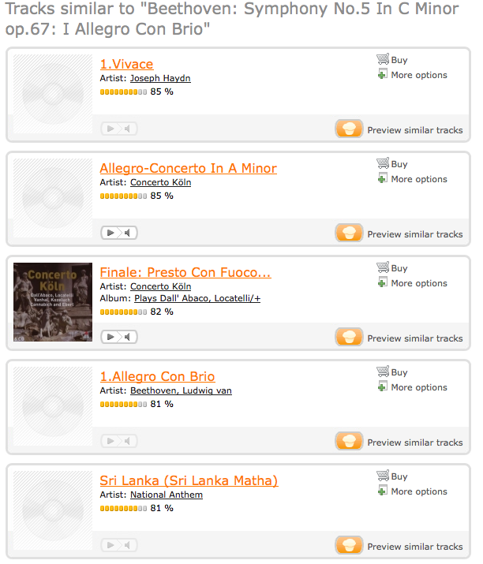

Going where no collaborative filter can go
We've seen a few commercial music recommenders that rely on
content-based techniques - MusicIP, Echo Nest, Ghanni, One Llama,
Audiobaba, Owl, SoundFlavor and Pandora have all had some aspect of
content-based recommendation at the core of their systems. Now there's
another content-based recommender to add to the list of contenders -
mufin. 
Mufin (which stands for MusicFinder) is a content-based recommender that (according to Techcrunch) is an offshoot of Fraunhofer (the folks who invented the MP3). Given this pedigree, I had very high expectations for Mufin.
The Technology
From the Mufin Technology page:
- mufin uses mathematical extraction of specific details from a
music title to create an objective desciption of the title’s
characteristics which is independent of human influences. Using this
description, songs which are similar to one another can be filtered out
of a large database. Rhythmical characteristics (e.g. intensity of the
rhythm, tempo, percussion in the piece), sound colour, harmonic and
melodic qualities are weighted differently for the result.
My Impressions
I was lucky enough to get a invitation to the Mufin private beta - so I took it for a spin - here are my impressions.

The Mufin site is very simple to understand. It has a classic search box where you can search for an artist, album or track. Since there are nearly 5,000,000 tracks in the catalog you are bound to find what you are looking for. I searched for bands like Deerhoof, ELP, The Beatles, Hannah Montana, The Feelies, and the Rheostatics. Mufin had them all. Unfortunately, Mufin won't let you play back all of the songs in the catalog - some songs can be played all the way through, some you can play 30 second excerpts, and some are not playable at all - this is, no doubt due to the crazy licensing issues that plague digital music. Mufin also lets you purchase tracks from iTunes - (allowing Mufin to make some money via referrals).
The Recommendations
Of course, searching for music is no big deal - what we are interested in are the content-based recommendations. So lets check them out.Whenever I try out a new content-based recommender, the first track I usually try is Revolution #9 by the Beatles. This is a good way to find out if a recommender is really a CF recommender trying to pose as a content-based recommender. Revolution 9 is so unlike any other Beatles song (or any other Rock or Pop song recorded in the 70s) - that recommendations from a content-based recommender will yield very different results than what you'd get from a CF recommender. Using Mufin to find music similar to Revolution #9 yielded a rather strange grab bag of music: Some Wagner, Engelbert Humperdink, UFO, Gershwin, The Disney Aladin Soundtrack, Frank Sinatra, and Ella Fitzgerald. No 70s pop, which is a good sign, but the results seemed to be strongly under the influence of a random number generator. Not a very good start - but since Revolution #9 is not your typical track perhaps these results were an aberration.

So I moved on to something a bit more conventional - some power pop with from Weezer. I tried the track 'My Name is Jonas'

These results looked better with tracks by Foreigner, Cell Division, Guano Apes, Dream Theater. However, there was also quite a bit of heavy metal - Rhapsody, Kamelot, Dio - that didn't really seem to fit to well.
Next up was some cool jazz - Take Five by Dave Brubeck. For similar tracks I did get some cool jazz like McCoy Tyner, but also some salsa, some crash test dummies, some blues by McCracklin and Louisiana Red (good stuff, but not anywhere near the cool jazz and syncopated rhythms of Brubeck), some female vocalist/country music by Frances Black, Gospel music by the Jackon Southernaires. Again it seemed like the random number generator was working overtime on this set of recommendations.
Next up was Led Zeppelins venerable classic Stairway to Heaven:

The recommendations included soul music by Aaron Neville, minimalist electronica (tubular bells), classical piano (Mussorgsky), easy listening (Englebert Humperdink, Paul Anka). There was no need to 'get the led out' of this list. One has to wonder about a recommender that puts Engelbert Humperdink in the same list as Mussorgsky's Pictures at an Exhibition.
Finally I tried some classical music - with Beethoven's Fifth symphony.

These recommendations seem to be much better - the recommendations include some more Beethoven, there's Hayden, Handel, Tschaikovksy, Mozart, Chopin, Dvorak and a number of classical film scores.
Summmary
The Mufin folks have done a good job putting together the Mufin site. They've indexed an incredible amount of music. The search engine and the recommender engine are fast. The site design is clean, and easy to use. However, the content-based recommendations provided by Mufin don't fair well when compared to the type of recommendations one can get from a CF filtering recommender. There is a very high rate of 'clunker' tracks that no human would ever recommend based upon the seed track. For some seed tracks, the recommendations seemed no better than shuffle play -while for others especially classical, the recommendations seemed to be pretty good.The Mufin team are working hard to improve their recommendations - I hope they get the kinks out - it would be nice to see long tail, content-based recommendation become a reality.
There are clear stylistic similarities between Beethoven and Haydn, but Handel, Tchaikovsky, Mozart, and Chopin represent *huge* misses for Mufin.
Lumping these disparate composers together says little about the success (or failure) of Mufin, however it boldly proclaims your ignorance of non-popular music -- a common theme I find throughout the MIR community.
And if we humans don't know what we're talkin' 'bout, how we gonna teach the machines?
Posted by 70.110.247.5 on November 18, 2008 at 09:52 AM EST #
@anonymous commenter - about Beethoven, Hayden, Handel, Tschaikovksy, Mozart, Chopin, Dvorak - I wasn't saying these were great recommendations - my point was that at least this set of similar pieces were from the same top level genre (classical), which was better than all of the other sets of similar artists which would span across a number of top level genres.
Posted by Paul Lamere on November 18, 2008 at 10:24 AM EST #
But is the way to evaluate these sorts of systems really to feed the algorithm only a single seed track? I would say that there is so little information contained in a single track that it says more about the quantity of data than it does about the power of the recommender.
If I were building a content-based music recommendation engine, I would (1) crawl someone's 1000+ song collection, (2) filter out the more popular tunes, (3) run my content-based feature extraction algorithms and find common features across *all* the songs (not just one song), and then (4) use those features as the basis or input to the recommendation engine.
Because otherwise, it is unclear what you really mean when you say "find me something like this one". The Engelbert Humperdink song might have the same phrase structure as the Mussorgsky piece (e.g. ABABCCAA'BB'). And unless you've specified otherwise, that is as good a match as any.
Posted by jeremy on November 18, 2008 at 05:35 PM EST #
Not to beat a dead horse, but I do find this kind of naive misstatement to be an all-to-common occurrence within the community.
I come to MIR with an "upside down" resume -- 30+ years in academic music performance and conservatory study with only a decade or so of "self-taught" CS. And nothing looks more ridiculous than a well formed process producing musically incoherent results that has dozens of MIR research engineers jumping for joy. (I realize this is not the case here, but I've seen it happen plenty of times...)
The "secret ingredient" so often missing from these evaluations is an intimate awareness of the mechanics of musical language. A true understanding of exactly how musical events can function and be interpreted in various contexts.
Put another way, relying on a 200-course-level music theory knowledge base to unravel the complexities involved in understanding music genre classification is about as clever as trying to determine the potential of neural network based approaches to machine learning with only a few months experience hacking around on cgi-perl scripts.
So when will the musical scholars show up to shed some light on this otherwise potentially fascinating subject?
Posted by 70.110.247.5 on November 19, 2008 at 10:11 AM EST #
@anonymous - your point is well taken. However, the state-of-the-art for automatic music similarity and classification is such that even simple tasks such as classifying music as 'classical' or 'not classical' (a task that an eight year old, without any music training can do easily) can be challenging for computers. I certainly agree that the MIR field will benefit from deep music theory knowledge, but I don't think it is necessary for every MIR task.
I'll stand by my "naive misstatement" - that Mufin's playlist based on Beethoven's Fifth is much better than the 'Stairway to Heaven' playlist. I use the simplest evaluation metric - how many tracks in the top 5 are in the same high level genre of the seed track. For the Stairway list, I would expect similar tracks to be 'rock' - the Mufin list has 3 'easy listening' tracks, 1 'minimalist / experimental' and 1 'classical' - for a score of zero. For the Fifth symphony playlist, I'd expect 'classical' tracks in the similarity list. Mufin gives me 4 out of 5. With this basic metric, the Beethoven list is better. I don't think one needs even music theory 101 to make that evaluation.
It is still early days for content-based music similarity. These systems make errors that no humans would make - they'll put Led Zeppelin and Englebert Humperdinck in the same bucket, likewise they'll put Beethoven and Chopin in the same bucket. I think it will be a long time before these systems are capable of recognizing musical nuances that someone with your music expertise is capable of recognizing.
Posted by Paul Lamere on November 19, 2008 at 11:22 AM EST #
Apologies for posting anonymously, but we attend the same conferences and I've often found my views to be unwelcome in certain circles. That said, I *very much* appreciate your having this conversation with me...
And so it appears I haven't made myself entirely clear. My condensed point (as it applies to your original post) is this: while it may not ring true to an 8-year-old, there may well exist a great deal of musical similarity between Led Zeppelin and Englebert Humperdinck...
For example, the instrumental combinations found in both samples are drawn from an awfully short list of candidates. Both are likely to contain a strong sense of similar (and easily detectable) metric regularity. It's also very likely that the harmonic structure will be made up of very similar (possibly even the same, in instances like the "blues") diatonic/modal progressions.
*None* of this is at all likely to be the case when comparing Handel to Brahms.
So if you're willing to assert that 100+ of years of evolutionary language development throughout numerous (and often disparate) ensemble configurations (solo, choral, chamber, orchestral, etc.) can be lumped into a single genre label, then you'd better accept the fact that "easy-listening" and "heavy metal" belong together as well.
Throughout the MIR community, I see dozens of efforts attempting to organize popular music collections into record industry created genre terms like electronica, trance, synth-pop, and dub.
It seems to me that getting beyond this simplistic view will require experienced investigation into the musical language of specific composers as well as the tendencies of performers. Experience and awareness that is frequently (and mysteriously) lacking in these circles.
Posted by 70.110.247.5 on November 19, 2008 at 02:40 PM EST #
anonymous: Paul does have a point, but I'm also kinda on your side on this one. There are more ways of organizing music information, and measuring similarity, than just genre.
For example, one information need that I've long had, ever since I started social dancing 15 years ago, is the need to find songs that have not only similar rhythmic structures, but also have the right harmonic structure and overall "feel", such that I can dance the same types of dance to those songs.
For example, suppose I want to do a cha-cha. Typically, you would think of cha-chas as more some sort of latin genre. But there are also songs by Madonna that are wonderful cha-chas. And I know of at least one song by the post-punk/mod godfather Paul Weller that is a fun cha-cha. They would not technically fall into the cha-cha genre, but they could very much be used to teach and to dance a cha-cha.
And so even though all these song are from different "genres" (who in their right mind would lump Latin with Madonna with post-punk?), they are all similar by means of some deeper, musical structure. And by means of a specific user information need.
I really think that MIR needs more of this sort of processing, the deeper, musical knowledge processing. And MIR really needs to think longer and harder about what information needs somebody really has.. what they're really after when looking for music.
Because ultimately, what it comes down to is the information need. For some types of information need, Paul is completely correct with his approach. The surface-timbral, social genres that one gets by throwing bag-of-features machine learning approaches at the content does solve a particular kind of information need. The deeper rhythmic approach solves another, different need. And so on. Both of you are right -- and it really all comes down to the user.
Believe it or not ISMIR was actually founded/started by musicologists and deeper music theorists. I know. I was there, back in 2000, 2001, 2002. I saw it.
And in the early days, there was a lot more discussion around musicological approaches. There have been papers on musicologically-inspired processing and similarity. There have been papers on performance analysis. In the last 3-4 years that part of the community has shrunk in size, while the social genre and bag-of-MFCC machine learners have grown in size. That's ok. The community is dynamic. But the musicologists have not disappeared completely. They're still around. You can find them, discuss with them. And I would strongly encourage you to do so, and to do your best to publish/share/evangelicize your thoughts and results. I know there are certain program committee members, from year to year, that share a desire for more of the musicological papers to be accepted, and their voice does hold some sway.
Posted by jeremy on November 19, 2008 at 09:40 PM EST #
Posted by filter on November 25, 2008 at 06:01 AM EST #
Posted by the feelies on December 06, 2008 at 09:48 PM EST #
You're right, the recs are quite bad. Also you're right that Tubular Bells is a wack rec for Stairway to Heaven, but, Tubular Bells is *not* minimalist electronica.
Posted by anonymous on December 09, 2008 at 04:14 PM EST #
@anonymous .. "but, Tubular Bells is *not* minimalist electronica." - oh sure it is! I was relying on the expertise of none other than Ishkur himself.
To see for yourself go to http://techno.org/electronic-music-guide/
Click on 'downtempo', and then click on 'minimalism' and Tubular Bells is the first example.
Posted by Paul Lamere on December 09, 2008 at 04:28 PM EST #